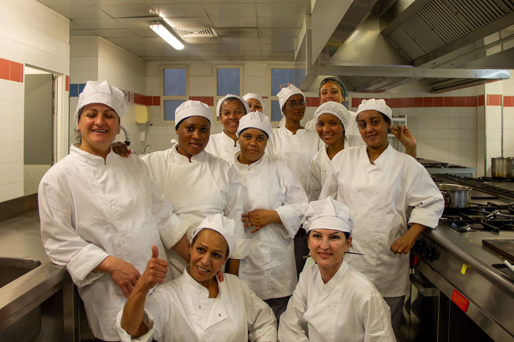
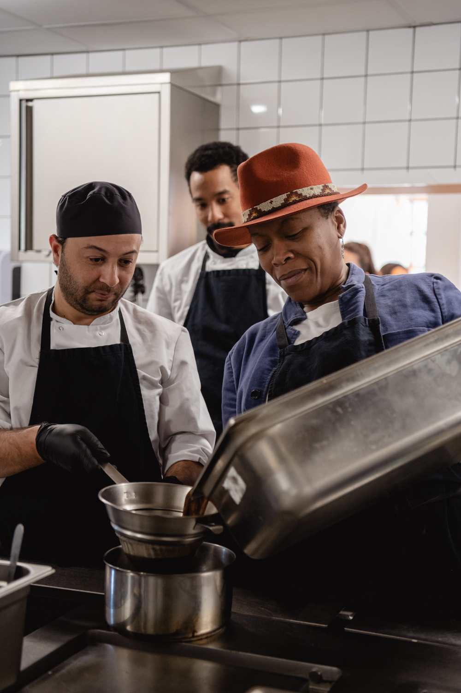
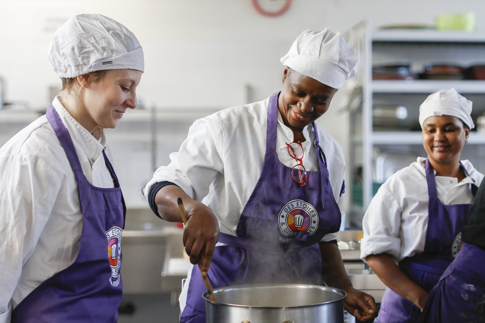
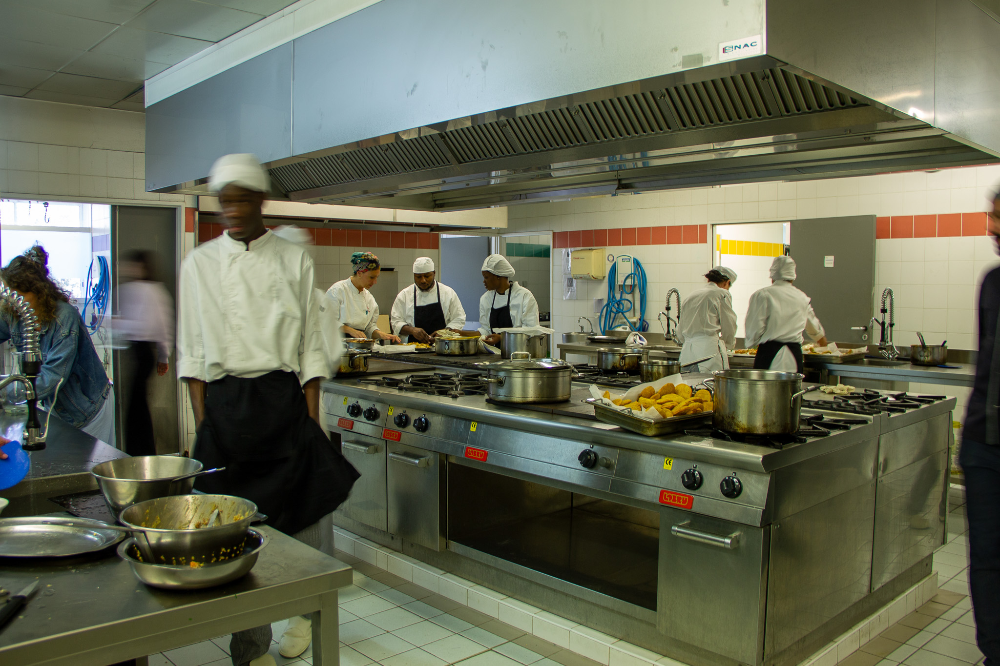
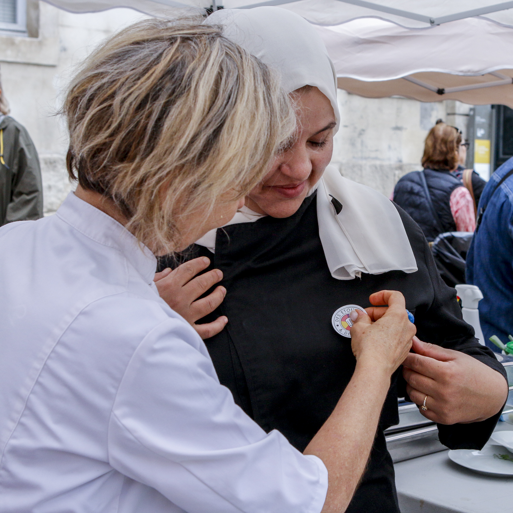
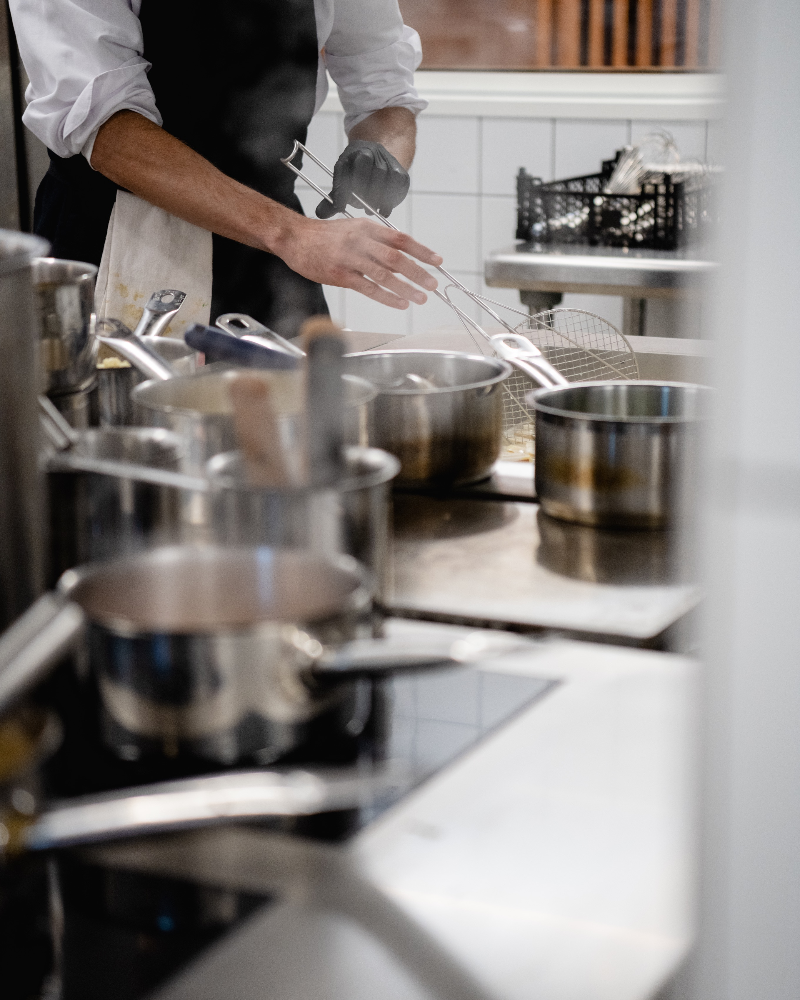
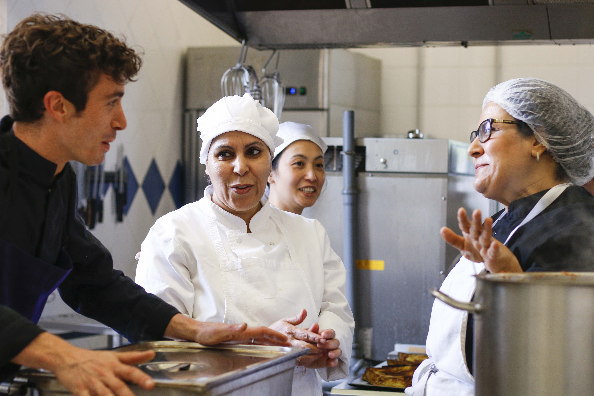
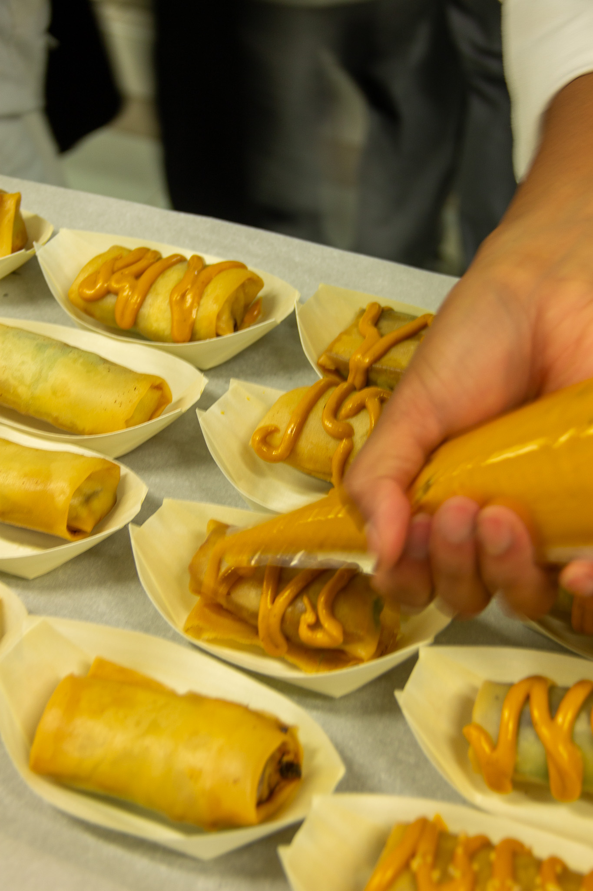
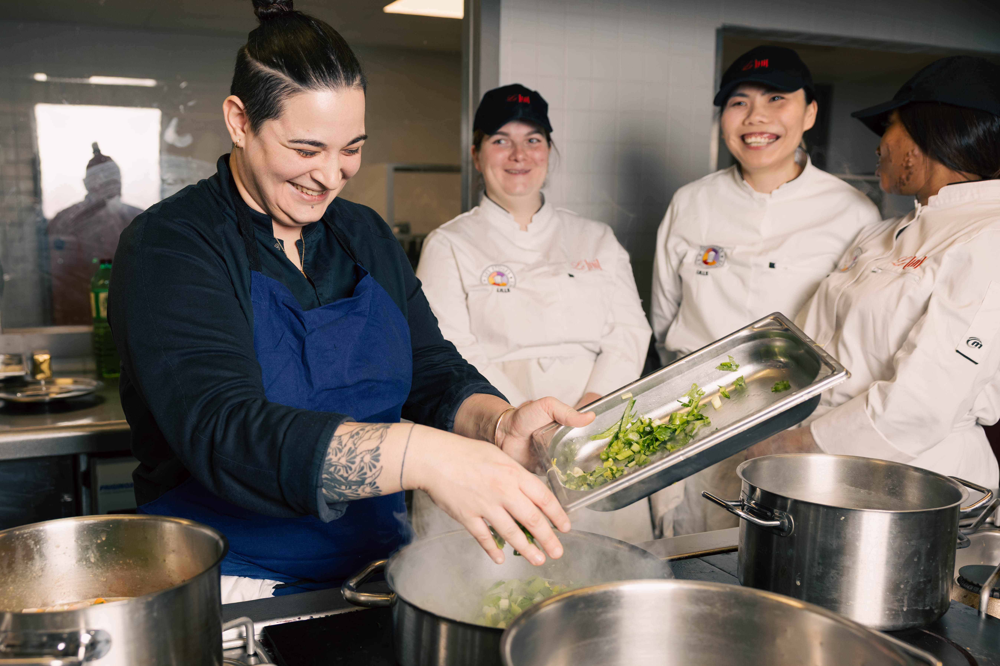
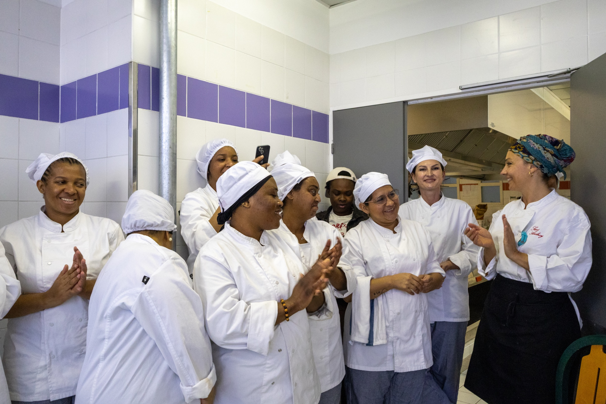

01 · Insertion
On accompagne
Des personnes loin de l’emploi — femmes isolées, personnes réfugiées ou primo-arrivantes — vers un métier de cuisine, avec exigence et bienveillance.


La restauration comme levier d’insertion, de formation et de transformation.
Festin forme aux métiers de la cuisine des personnes qui en sont éloignées. Et accompagne les restaurants qui veulent recruter et manager autrement. À Marseille et sur 14 territoires.
Deux besoins, deux réponses concrètes. Trouvez la vôtre.

Vous cherchez un métier
Vous dirigez un établissementDes restaurants, un traiteur, des formations, un mouvement national. Cinq manières d’agir sur un même secteur : la restauration.

Programme national d’insertion des femmes par la cuisine.
91 % de réussite aux diplômes en 2025
Le premier restaurant en prison ouvert au public en France.
86 % de sorties dynamiques
Traiteur et restauration collective en insertion, à Marseille.
400 000+ convives régalés
Un mouvement national pour transformer le secteur de la restauration.
700 signataires du manifeste
Formation diplômante pour personnes réfugiées et primo-arrivantes.
6 mois · TP Commis de cuisine · gratuite et rémunéréeRestaurants, traiteur, formations, plaidoyer — 14 territoires, 5 projets complémentaires.
Voir les projets →

Des personnes formées, des chefs qui recrutent, des partenaires qui s’engagent.
Je suis fière, indépendante, heureuse d’avoir su franchir toutes ces étapes.
Sami s’est très vite intégré à l’équipe. Il a été très bien formé aux Beaux Mets et avait l’attitude qui correspondait à une cuisine.
Je n’avais jamais travaillé avant. Aujourd’hui, j’ai ma première fiche de paie. Ça me donne de la fierté.
[Témoignage à recueillir — entreprise mécène ou partenaire RH]
Ça m’a vraiment aidé à avoir confiance en mes compétences. Aujourd’hui, j’ai un CDI. Je suis fier du chemin parcouru.
Pour réussir à vraiment changer les choses, je suis persuadé qu’il faut avancer collectivement.
[Témoignage à recueillir]
Parcours diplômants gratuits en cuisine, avec accompagnement complet. Prochaines promotions à Marseille et sur 14 territoires.
Voir les prochaines sessions → Vous dirigez un restaurantUn vivier de profils formés, et des formations courtes pour vos équipes en salle et en cuisine.
Devenir restaurant partenaire → Vous êtes entreprise, partenaire ou financeurMécénat, financement de parcours, mise à disposition de compétences. On construit l’engagement avec vous.
Nous contacter →